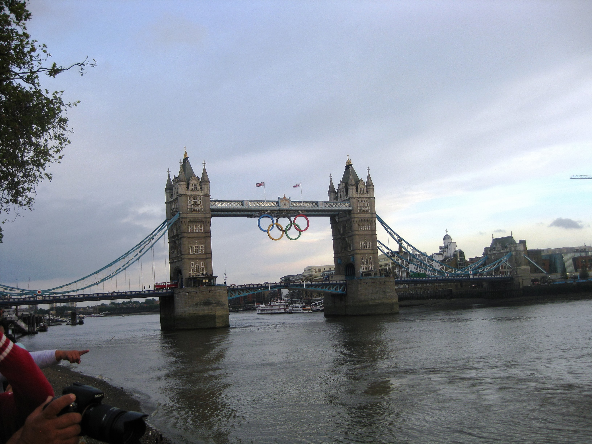

Shift Eight C074 Lilac 10.00pm to 8.00am.
Tuesday 31st July 2012
Down to breakfast by 9.15am. Loaded up with loads of breakfast, plus made bacon and scrambled egg toasted
sandwich for lunch. Went back to my room to watch a bit of the Olympics on the telly. The weather was a bit dodgy but decided to do a bit of
sightseeing en route to my night shift especially as I saw Tower Bridge would be lifting at 7.30pm.
Parked at Epping station by 6pm (which was still quite full) to change at Tottenham Court Road to get off at Charing Cross. Took
Trafalgar Square exit and headed
there to see the silly hats on the statues. Nelson's hat was made out of a Union Jack with an Olympic Torch attached.
King George V1 had a crown fashioned on Brighton Pavilion. Sir Henry Havelock had
a reflective fascinator. General Napier had a very wavy hat.

Walked down Whitehall to Westminster Tube to make for the
Tower Bridge area, where the Olympic Flame was being projected onto the Mayor of
London HQ. A family was a little upset that the Olympic rings were not hanging from
Tower Bridge. I cheered them up by explaining they were up because it was going to lift at 7.30pm. Bang on time
the bridge lifted, a tall masted boat passed underneath, the bridge lowered and the
rings came back down. Walked back to the tube past a Beefeater Mandeville and a
Ravens Wenlock.
Checked in at 9.15pm eventually once the fleet woman had had a cup of tea. Only three of us were assigned to the Lilac team. After having a
jacket potato with creamy mushroom sauce (very tasty), the usual wait ensued. Eventually just before midnight I was tasked to take two of
the catering staff home. First stop was Chingford and then it was on to Enfield. Set DORS to take me back to Eton Manor which meant we went
out of our way to get back onto the ORN. Hadn't realised we were so close to Lea Valley White Water Centre. Trip back was via M25 and M11.
As came off M11 to A406 to turn onto A12, the guy in front braked. I thought he was lost so I overtook him and then pulled in front only to
be flashed at by a bloody speed camera. Afer telling myself to slow down umpteen times over the last few days a lack of concentration and I
must have been doing 70mph in a 50mph zone. Bugger. Luckily, nothing came of it.
Got back to Eton Manor at 1.30am where there were about 20 cars waiting. The fleet transport team staff left at about 2am. At 3.30 am control
called to see how many of us were left at Eton Manor. The three of us were called back to the FDO. Shop Motability people sent me over to
see a dispatcher at FDO. He said there was no work at the moment. There was however a driver wandering around looking for a lift. Eventually
someone was tasked to take him. Apparently they were so busy ferrying staff and doing real RFT's at FDO they had to send a transport team
member out as a driver. I asked why they hadn't asked the people at Eton Manor to do it but they said apologetically that they had been
asked to man Eton Manor until 3.00am in case people were coming out of hospitality. Pity the people that asked for us didn't leave their own
staff there.
7 of the night shift were by now in FDO. Listened to C311 getting totally lost on the way to the athletes village. Driver already at Wembley
Park PLaza for an RFT, asked for another car to go there. Control said he didn't think he had any cars available. We radiod that there were 7
of us in the break area and Control said he had just come on shift and didn't know where anyone was!! Eventually asked to move up to P6 and
get ready to check out but wait in FDO for the first 30 of the day staff to arrive. 20 had RFT's waiting for them and the next 30 were going
to Heathrow. 6.25am came and we were allowed to go. Tube back to Epping, drive to hotel and in bed going to sleep by 8.30am